原文：F/OSS Comics 第 9 篇《The Unix Philosophy》，Joone Hur 绘，2026 年 8 月 22 日
原文链接：https://fosscomics.com/posts/9.%20The%20Unix%20Philosophy
本文为完整中文翻译，保留原文的旁白、对话、列表、参考��源与家族树结构。⭐ 标记处为译者补充的说明。
⭐ 本文是 F/OSS Comics 五部曲的第一篇。

开篇
⭐ 旁白：
「当年那本 Unix 手册里的 UNIX，出现在 1971 年第一次发布时。」
Unix 的遗产至今仍在
⭐ 旁白：
「信息技术以惊人的速度变化演进。但 Unix 已经存在了五十多年，它的哲学、API 设计与工具至今仍活在 Unix 和类 Unix 操作系统里。」
「1971 年首次发布。」
（漫画中，Ritchie 与 Thompson 的对话：）
「我什么时候能退休？」
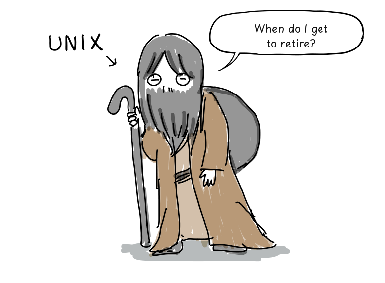
「Unix 的遗产至今仍在我们周围。」
⭐ 旁白：
「Android 以及 Debian、Ubuntu、Arch Linux 这样的 Linux 发行版用的是 Linux 内核。苹果的 macOS 与 iOS —— 运行在 Mac 和 iPhone 上 —— 同样是基于 Unix 的。甚至 Windows 也能通过 WSL（适用于 Linux 的 Windows 子系统）跑 Linux 环境。」
⭐ Unix 家族树（原文的 mermaid 图，中文标注）：
Unix ──┬── BSD ──┬── NeXTSTEP ──┬── Mac OS X ──┬── macOS
│ │ │ └── iOS
│ ├── FreeBSD
│ └── SunOS ──── Solaris ──── OpenSolaris
└── System V ──(SVR4 base)──> Solaris
MINIX ──(影响了开发过程)──> Linux ──(通过 WSL 跑在 Windows 上)──> WSL⭐ 旁白：
「MINIX 是 Tanenbaum 教授为了教授操作系统设计而开发的小型类 Unix 系统。更多细节见维基百科的家族树。」
从 MINIX 到 Linux
⭐ 旁白：
「1979 年，Unix V7 的许可证禁止在课堂上使用其源代码。作为回应，Tanenbaum 教授开发了 MINIX 用于教授操作系统设计，并于 1987 年发布。」
（对话：）
「也许我该为我的学生造一个简单的操作系统。」
⭐ 旁白：
「1991 年，Linus Torvalds 在他新买的 Intel 386 PC 上使用着 MINIX。在阅读 Tanenbaum 的《操作系统：设计与实现》时，他开始开发 Linux 内核。」
（对话：）
「寒假很长……我想我会去读那本 MINIX 的书。」
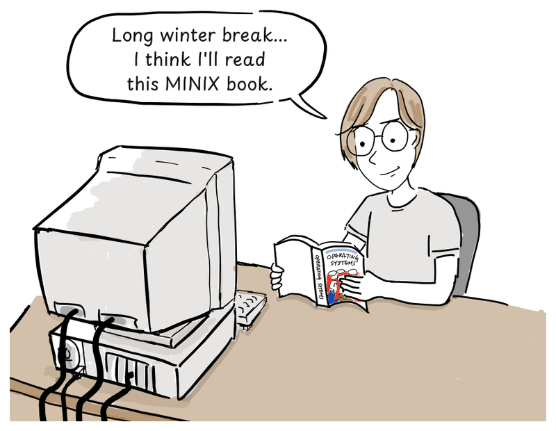
⭐ 旁白：
「Linux 内核没有使用 MINIX 或 Unix 的源代码。它实现的是 POSIX 风格的标准接口，因此现有 Unix 程序的源码可以不做修改地编译运行。而且 Linux 0.01 发布时就自带了一个 Bash shell 的移植版[5]。」
（对话：）
「我开始实现那些系统调用，好让 Bash 跑起来。」
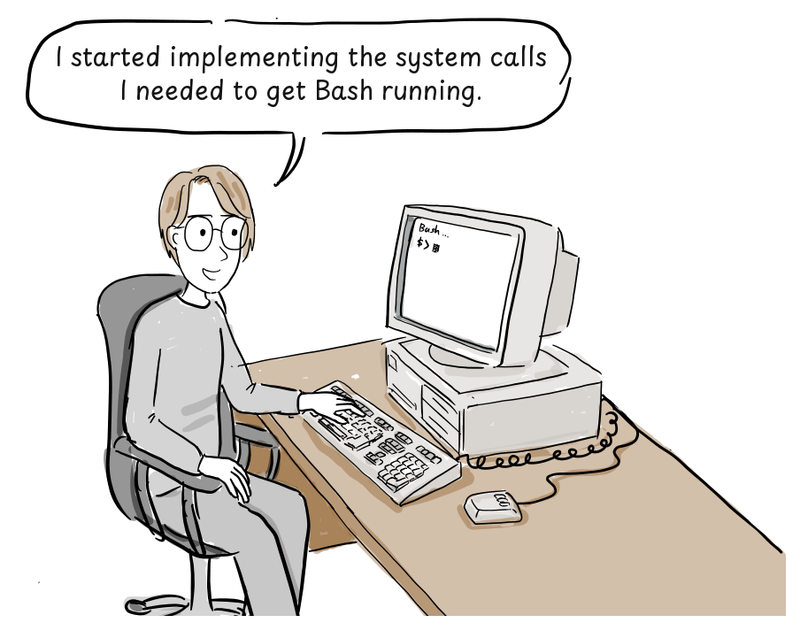
什么是 Unix 哲学？
（对话：）
「Unix 究竟为什么能塑造科技界这么多年？」
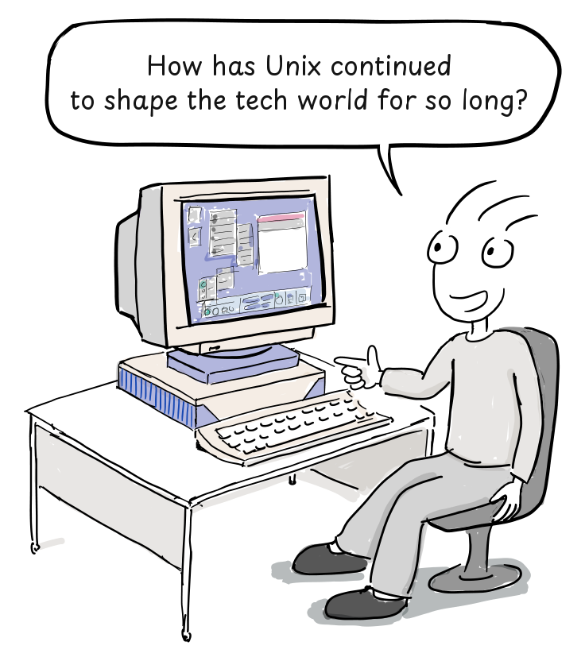
⭐ 旁白：
「要找到答案，我们需要理解 Unix 哲学。但 Unix 并不是以一套宏大哲学开始的。Eric S. Raymond 后来用一条人尽皆知的设计原则总结道：」
（对话：）
「保持简单，笨蛋。」[1]
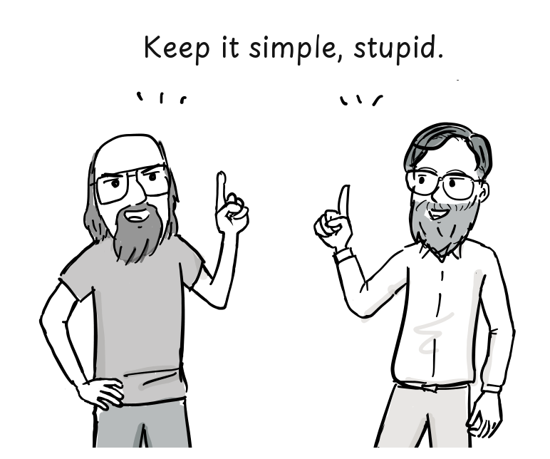
「得了吧，你在开玩笑。告诉我真正的哲学。」
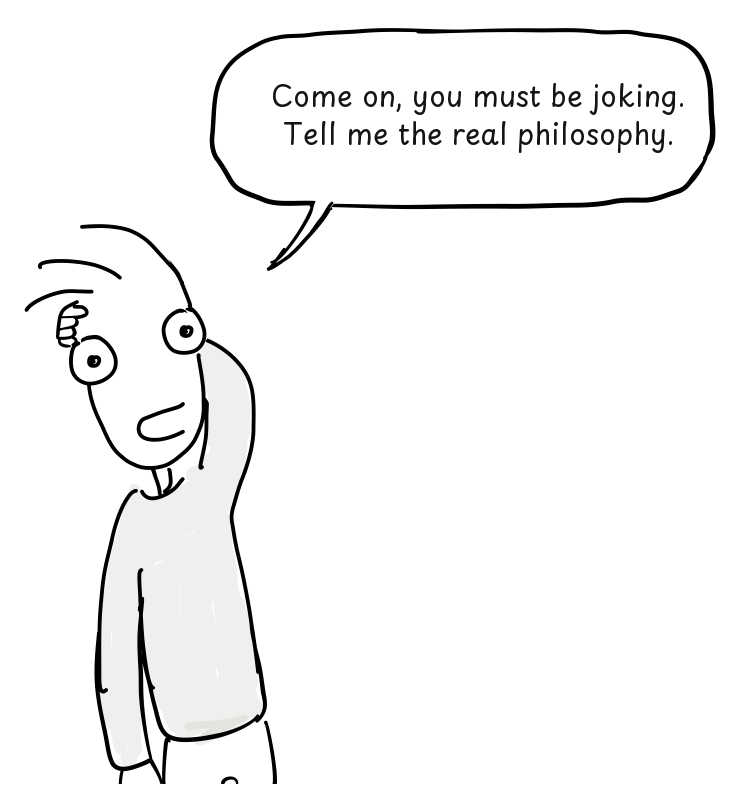
「嗯……我们只是把它造出来了。」
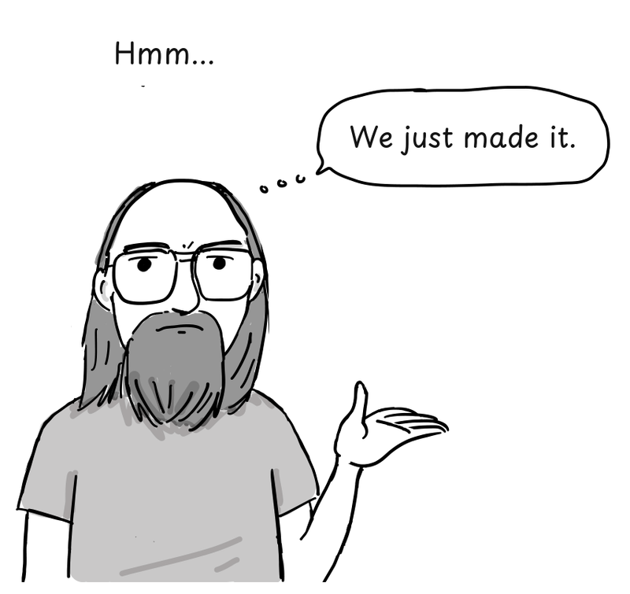
⭐ 旁白：
「根据维基百科：『Unix 哲学源自 Ken Thompson，是一套关于极简、模块化软件开发的文化规范与哲学方法。它建立在 Unix 操作系统主要开发者们的经验之上。』[2]」
（对话：）
「想想那些小型、模块化的程序。这套哲学是从早期 Unix 开发者的经验中长出来的。」
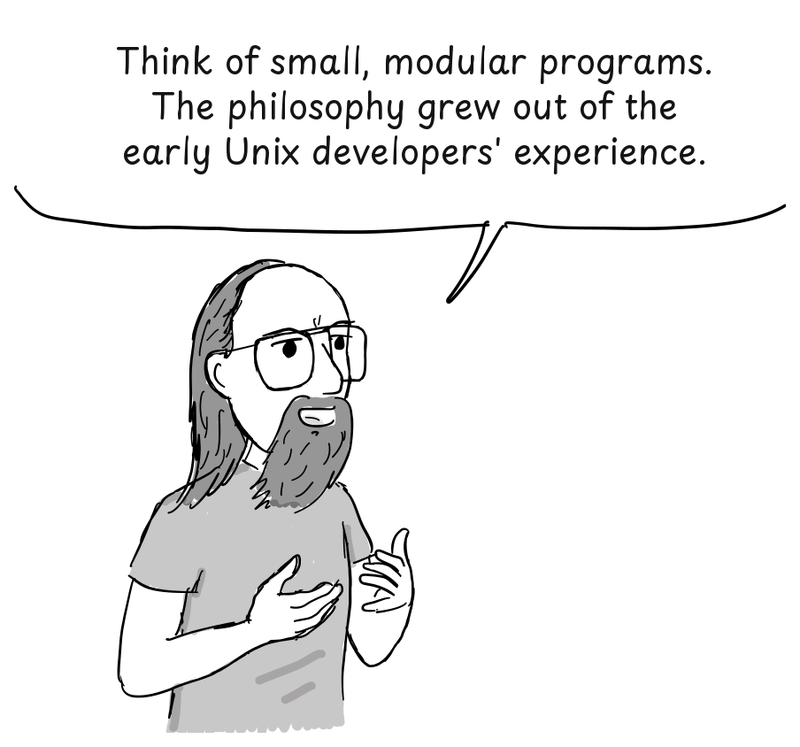
「我还是不太懂。」
把一件事做好的程序
⭐ 旁白：
「1978 年，Doug McIlroy 正式记录下了这套哲学：[3]」
- 让每个程序只做一件事，并把它做好。要做新活，就重新造一个，而不是给旧程序加新功能来把它弄复杂。
- 预期每个程序的输出会成为另一个（尚未知的）程序的输入。不要用多余的信息污染输出。不要坚持严格的列式或二进制输入格式。不要坚持交互式输入。
- 设计并构建软件（哪怕是操作系统）要尽早试用，最好在几周之内。不要犹豫于扔掉笨拙的部分并重新构建它们。
- 优先使用工具而不是无能的帮助来减轻一项编程任务，即便你得绕道去构建这些工具，并预期用完之后把它们扔掉。
（对话：）
「太长了。弄简单点！」
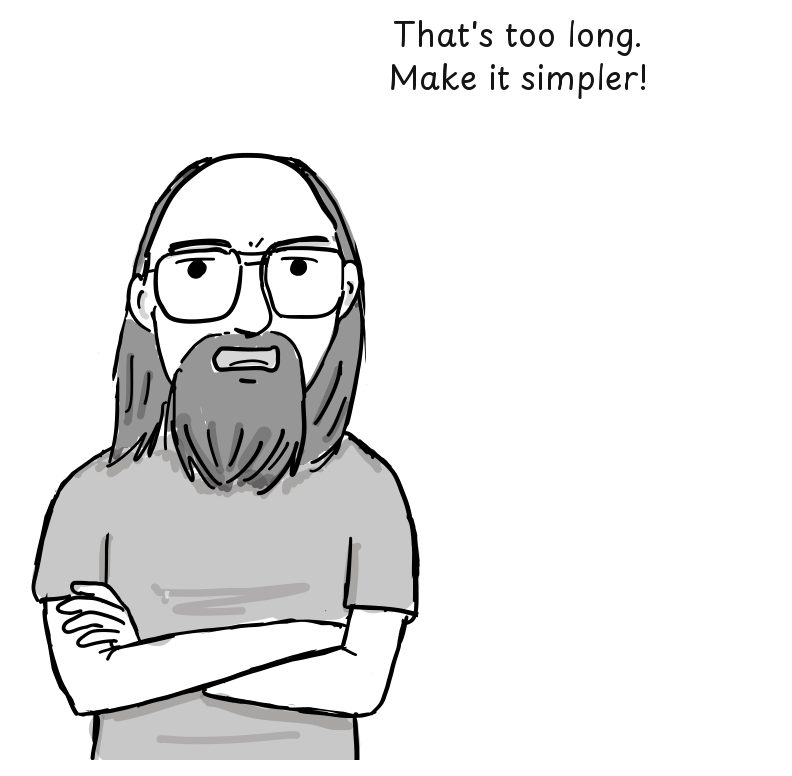
⭐ 旁白：
「Peter H. Salus 后来又把这套哲学总结了一次：[4]」
- 写只做一件事并做好的程序。
- 写能一起工作的程序。
- 写能处理文本流的程序，因为文本流是一种通用接口。
（对话：）
「就像用乐高积木搭东西！」
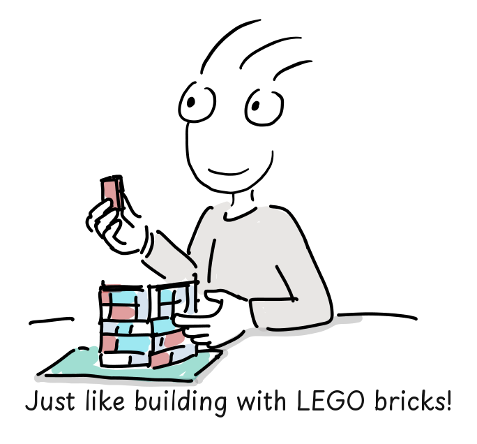
C 与 Unix 的可移植性
⭐ 旁白：
「就像乐高积木一样，Unix 程序可以通过各自的输入与输出连接起来，搭出更复杂的工具。Unix 后来被大改写成 C，这让把它移植到不同计算机上变得容易得多。」
「编译器把 C 源码翻译成目标处理器的机器码。当然，硬件相关的代码和底层汇编例程仍然需要为每个平台做适配。」
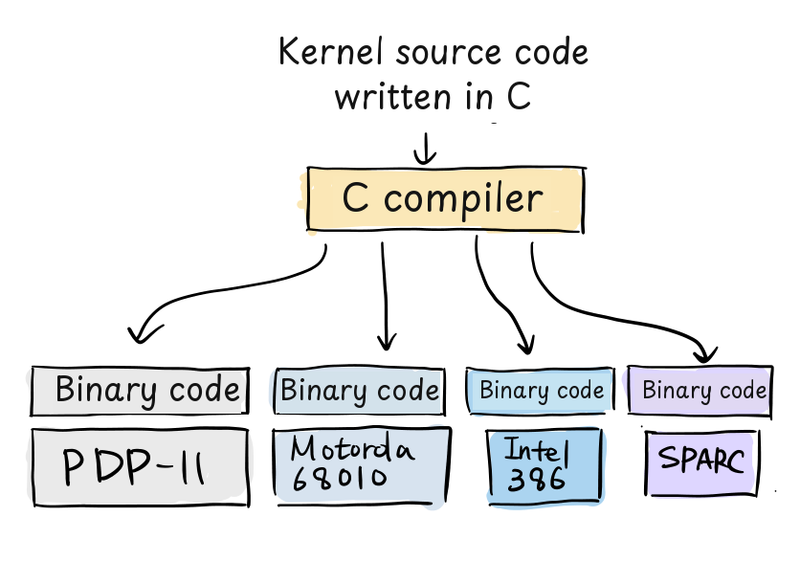
（对话：）
「那时候，内核通常是用汇编写的。开发出 C 并用它重写一个操作系统内核 —— 这个想法当时挺吓人的！」
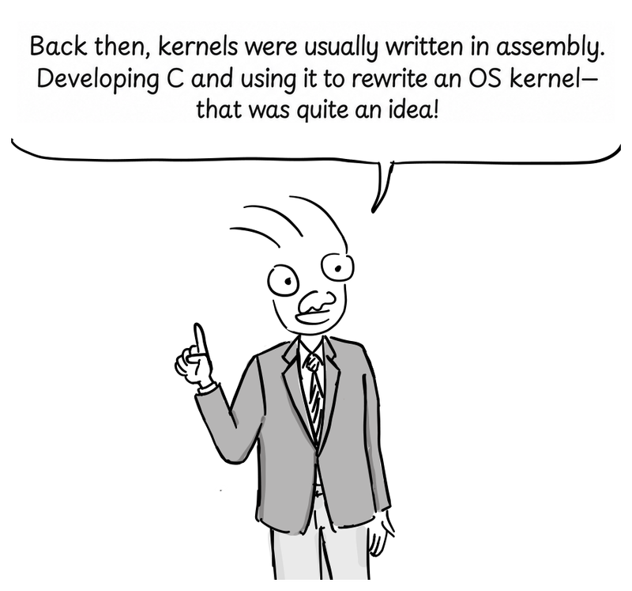
「Unix 影响了许多操作系统，不只是技术上的原因。它的源码有一种会自己旅行的方式。但那是另一个故事了……」
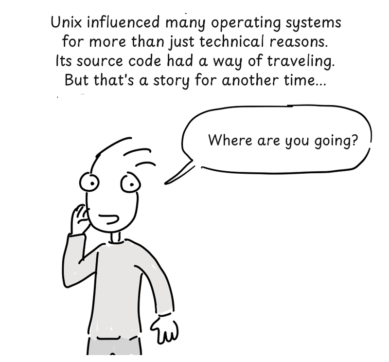
「你要去哪儿？」
「这是个秘密。」（Unix 源码在磁带上。）
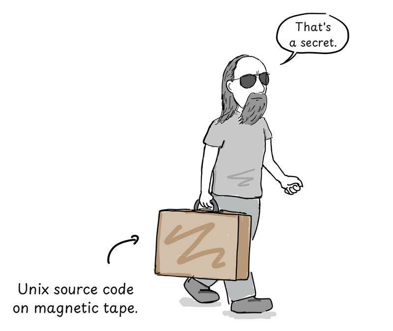
References
- Eric S. Raymond,《The Unix Philosophy in One Lesson》, The Art of Unix Programming, Addison-Wesley, 2003.
- 《Unix philosophy》, Wikipedia.
- M. D. McIlroy, E. N. Pinson, and B. A. Tague,《Unix Time-Sharing System: Foreword》, Bell System Technical Journal 57, no. 6, 1978, pp. 1899–1904.
- Peter H. Salus,《A Quarter Century of UNIX》, Addison-Wesley, 1994, pp. 52–53.
- Linus Torvalds, Notes for Linux release 0.01, 1991.
⭐ 译者按：三个值得单独说的点
一、⭐ 「Unix 哲学」是事后总结，不是事先纲领
⭐ 漫画用一句对话把这件事说透了：
「保持简单，笨蛋。」
「得了吧，你在开玩笑。告诉我真正的哲学。」
「嗯……我们只是把它造出来了。」
⭐ 而这在技术史上是有分量的 —— 因为 Unix 哲学后来被大量引述为「Unix 的设计原则」，仿佛它从一开始就存在。
⭐ 但 McIlroy 那份正式表述是 1978 年（Unix V7 之后近十年），Salus 那份是 1994 年 —— 而 Unix 本身是 1969 年诞生的。
—— 换句话说，⭐ 「Unix 哲学」这个概念本身，是 Unix 成功之后才被提炼出来的。
二、⭐ 「复制一份源码」在当年需要三样东西
⭐ 而这一篇里那句关于 MINIX 的旁白，藏着整件事的机制：
「1979 年，Unix V7 的许可证禁止在课堂上使用其源代码。」
⭐ 也就是说 —— ⭐ Unix 源码本身是被 AT&T 的许可证锁住的。Tanenbaum 造 MINIX，正是因为「想在课堂上讲操作系统设计，却不能给学生 Unix 的源码」。
⭐ 而 MINIX 反过来又成了 Linux 的起点：Torvalds 读着 Tanenbaum 的书、用着 MINIX，写出了内核。
⭐ 所以这条血缘是：⭐ Unix（被许可证锁住）→ MINIX（教学替代品）→ Linux（读着 MINIX 的书长大，但一行 MINIX 源码都没用）。
⭐ 而「Linux 内核没使用 MINIX 或 Unix 源码、只实现了 POSIX 风格接口」这一点尤其值得注意 —— ⭐ 这解释了为什么 Linux 生态能在一夜之间拥有整个 Unix 软件世界：不是移植代码，是实现了接口。**
三、⭐ 而 Bash 这个细节，是全篇最容易被滑过去的一笔
⭐ 旁白里那句：
「而且 Linux 0.01 发布时就自带了一个 Bash shell 的移植版。」
⭐ 而 Bash 正是由第 10 篇的主角 Dennis Ritchie 写的。
—— 所以 1991 年 1 月 Linux 0.01 那个磁带上，⭐ 已经有了「Unix 的语言 + Unix 的 shell」。
⭐ 而这也让第 9 篇和第 10 篇连成了一条完整的线：⭐ Ritchie 造了 Unix、造了 C、写了 Bash；而 Linux 是在这整套东西还在被他同事维护的时候长出来的。**
关于本系列
⭐ F/OSS Comics 是一个用漫画讲自由开源软件史的系列，2026 年 8 月到 10 月连更五篇。本号将逐篇做完整中文翻译：
| # | 标题 | 发布 |
|---|---|---|
| 9 | Unix 哲学（本文）** | 2026-08-22 |
| 10 | Dennis Ritchie 生平 | 2026-09-26 |
| 11 | BSD Unix 第一部：Unix 源码进入伯克利 | 2026-09-30 |
| 12 | BSD Unix 第二部：vi 的诞生 | 2026-10-11 |
| 13 | BSD Unix 第三部：BSD 的开端 | 2026-10-30 |
⭐ 而「一条磁带如何长成一个操作系统」是整个系列的导读 —— 见《一条磁带如何长成一个操作系统：F/OSS Comics 的 Unix 与 BSD 五部曲（系列导读）》。
（说明：本文为原文的完整中文翻译，保留原文的旁白、对话、列表与 References；译者按的三节补充说明为笔者观点。）

点评与讨论
GITHUB 账号登录有疑问、有补充、有不同看法？欢迎留下你的点评，一起把技术聊透。👇